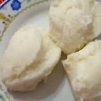

Pap Recipe

This is a quick recipe for niggas that can't cook nothing. So, here, have some Pap lil nigga
Ingredients
- 3 litres of chicken stock
- 250g of butter
- 450g of maize meal
Steps
- In a large saucepan, bring the stock to the boil over high heat. Add the butter and allow it to melt.
- Gradually rain in all of the ground maize, stirring constantly as it cooks and thickens. Start by boiling it, stirring as you go. Lower the heat to medium to thicken it, then to a low heat for a few minutes.
- After approximately 5-10 minutes, it will start to come away from the sides of the pan. This is a sign it's ready.
- Cover, remove from the heat and allow to steam for 15 minutes.
- Season with salt before serving.